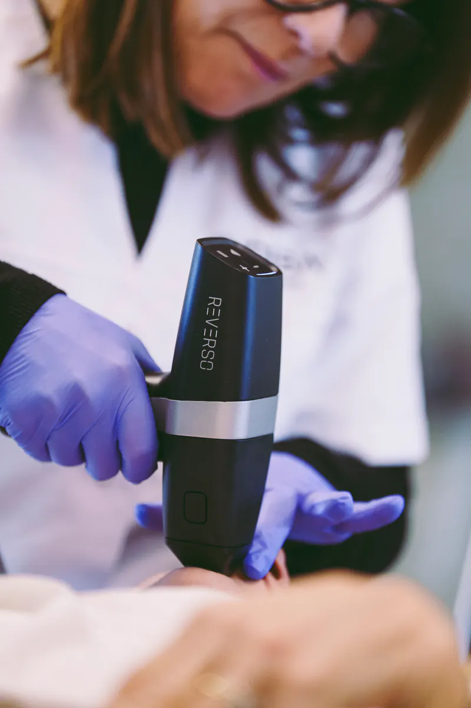
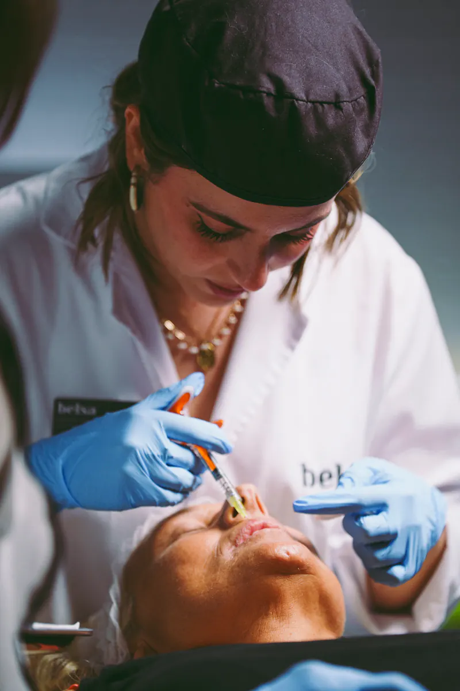
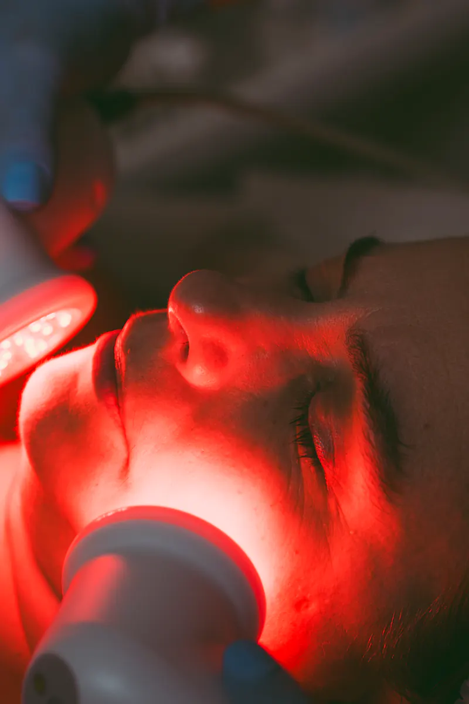

- Inicio
- Estética facial
- Microneedling
Microneedling
Microagujas de precisión con el sistema Nanopore para estimular la renovación de la piel y mejorar textura, poros y luminosidad.
- Tipo
- Estética facial avanzada
- Tecnología
- Nanopore · Mediderma
- Para
- Textura · Poros · Marcas
- Sesiones
- Según valoración
Microneedling, explicado
Qué es
El microneedling crea microcanales controlados en la piel para estimular sus mecanismos naturales de renovación y favorecer la penetración de activos. Utilizamos el sistema Nanopore del laboratorio Mediderma.
Para quién puede estar indicado
- Textura irregular y poros visibles.
- Marcas superficiales.
- Piel apagada que busca recuperar luminosidad.
La indicación final siempre se decide en consulta.
Tecnología que utilizamos
Nanopore, sistema de microneedling de Mediderma. Ver la tecnología.
Cómo es el proceso en BELSA
- Análisis: estudiamos tu piel o la zona a tratar y tus objetivos.
- Protocolo: elegimos la tecnología y la frecuencia adecuadas.
- Sesiones: en cabina privada, con un registro de cada visita.
- Revisión: medimos la evolución y ajustamos el plan.
Antes de decidir
Tras la sesión es normal un ligero enrojecimiento. La protección solar es imprescindible durante el tratamiento.
También se busca como: Microneedling facial · dermapen · poros y marcas de acné en Sant Cugat.
La información de esta página es orientativa y no sustituye a una valoración profesional. Cada resultado es individual y no garantiza el mismo efecto en otra persona.
Resultados reales, sin simulaciones
Estamos preparando casos reales de pacientes de BELSA. Solo los publicaremos con su autorización por escrito.
Solo publicaremos fotografías originales de pacientes de BELSA, con su autorización por escrito, misma luz y misma posición, sin retoque. Cada resultado es individual y no garantiza el mismo efecto en otra persona.
En preparación
Preguntas frecuentes
¿Se puede combinar con PRP?
Sí. Es una combinación habitual dentro de un plan médico.
¿Cuántas sesiones necesito?
Lo habitual es plantear varias sesiones espaciadas. Te damos una estimación tras analizar tu piel.
¿Tiene tiempo de recuperación?
Suele ser breve. Te damos las pautas por escrito.
Tratamientos relacionados

Radiofrecuencia fraccionada con microagujas
Microagujas de presión y radiofrecuencia en un mismo tratamiento, para trabajar la textura, los poros, las cicatrices y la firmeza de la piel.
Ver tratamiento
Plasma rico en plaquetas y exosomas
Medicina regenerativa a partir de tu propia sangre.
Ver tratamiento
Higiene facial avanzada
Limpieza profunda con hidrodermoabrasión Deep2 y luz LED para una piel limpia, hidratada y luminosa desde la primera sesión.
Ver tratamientoUna valoración, sin compromiso.